The Analysis of the Mean Tool will perform two standard inference procedures for a population mean of the population from which the given one variable data set has been drawn.
The first procedure is to construct a confidence interval for the population mean from the sample mean and standard deviation of the given one variable data set. If the sample size is over 30 a large sample procedure will be used and for a sample size under 30 a small sample procedure will be employed. In the latter case theoretically the parent population must be normal (see below) so it is best to check for normality and/or symmetry of the data in the case of a small sample.
The second procedure is to evaluate a hypothesis test testing a user supplied null hypothesis ( given in the form of a target mean) against a user supplied alternative hypothesis. The P-value of the given data (see below) will be computed and teh output box will indicate whether the results are significant relative to a user supplied level of significance. As with the confidence interval procedure if the sample size is over 30 a large sample procedure will be used and for a sample size under 30 a small sample procedure will be employed.
Estimates in statistics are most often expressed in terms of confidence intervals. Roughly these are intervals of numbers with confidence levels attached indicating the probability that what is being estimated actually falls within the interval. A formal definiiton is presented below. First we give a discussion of the estimation procedure in general.
In most
standard statistical analyses the parameters that are of most interest are means,  , standard deviations or variances,
, standard deviations or variances,  or 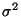 and proportions 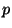. Eachof
these has a fairly standard statistic that is used to estimate it. For means we have
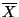, the sample mean; for standard deviations, 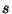, the sample standard deviation; and for
proportions , the sample proportion
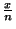, where
or 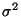 and proportions 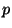. Eachof
these has a fairly standard statistic that is used to estimate it. For means we have
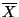, the sample mean; for standard deviations, 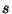, the sample standard deviation; and for
proportions , the sample proportion
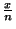, where  is the number of items observed
and 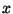 is the number of items observed of the characteristic of interest. Each of these
statistics is called an estimator for the corresponding parameter; hence
is an
estimator for
is the number of items observed
and 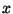 is the number of items observed of the characteristic of interest. Each of these
statistics is called an estimator for the corresponding parameter; hence
is an
estimator for  , is an estimator for
, is an estimator for  and is an estimator for . In general
if
and is an estimator for . In general
if  (theta) stands for a parameter, (it is no harm to think of this as either 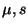 or
), then
(theta) stands for a parameter, (it is no harm to think of this as either 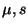 or
), then  will stand for an estimator for
will stand for an estimator for  . Any particular value of an estimator is
called a point estimate for the corresponding parameter.
. Any particular value of an estimator is
called a point estimate for the corresponding parameter.
In general, in statistics we do not use point estimates. There is no confidence in a point estimate and in most cases the probability that a point estimate is correct is zero. Rather interval estimates are used. Interval estimates are ranges of numbers which hopefully contain the parameter we are trying to estimate. For example if we are trying to estimate the mean completion time for the surgical procedure of the last section, 151 minutes would be a point estimate. A typical interval estimate might be 143 to 159 minutes. In most cases we use a special type of interval estimate called a confidence interval estimate or confidence interval. We will give a formal definition below but roughly a confidence interval estimate for a parameter is an interval estimate with a confidence level attached. The confidence level gives the probability that the parameter being estimated actually falls within the interval.
EXAMPLE Suppose that a 95% confidence interval for the mean completion time of the surgical procedure is given by 143 minutes to 159 minutes. This is interpreted in the following manner. The true mean completion time is a number. There is a 95% probability that it falls in the interval 143 to 159.
Notice that in using a confidence interval estimate there are two concepts of how good this estimate is, confidence and accuracy. The confidence of the estimate is given by the confidence level while the accuracy is given by the width of the interval. A narrow interval indicates greater accuracy than a wider interval. On an intuitive level it is clear that these two ideas are inversely related, that is for fixed sample size raising the confidence lowers the accuracy and vice versa. We will see this computationally in section 5.4. However we note that if we want a given confidence and wish to improve the accuracy we must take a larger sample size. In the real world this translates into cost and often the sample size chosen is a compromise between what the theory requires and what the budget of the study dictates.
If  is a parameter for a population 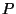 and
is a parameter for a population 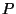 and  is an estimator for it, then as one goes
from random sample to random sample from the values of
is an estimator for it, then as one goes
from random sample to random sample from the values of  will vary. Hence
will vary. Hence  has its own
distribution of values over all possible samples taken from (we assume here the same
sample size in each case). This is called the sampling distribution of the
estimator
has its own
distribution of values over all possible samples taken from (we assume here the same
sample size in each case). This is called the sampling distribution of the
estimator  . Hence for a given sample size
. Hence for a given sample size  and a given population with mean
and a given population with mean  there
will be a sampling distribution for
there
will be a sampling distribution for  , consisting of all possible sample means of
samples of size
, consisting of all possible sample means of
samples of size  drawn from . Similarly there will be a sampling distribution
for the sample standard deviation and a sampling distribution for the sample proportion
. The sampling distribution of an estimator
drawn from . Similarly there will be a sampling distribution
for the sample standard deviation and a sampling distribution for the sample proportion
. The sampling distribution of an estimator  will have its own mean and own standard
deviation. We will denote these by 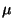 and
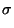.
will have its own mean and own standard
deviation. We will denote these by 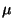 and
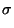.
If
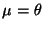, that is the mean of the sampling distribution is equal to the
parameter it is supposed to estimate, then  is called an unbiased estimator for
is called an unbiased estimator for
 . In general
is called the standard error of the estimator.
. In general
is called the standard error of the estimator.
We examine these ideas relative to sample means.
For any population with mean  and standard deviation
and standard deviation  the sample mean
the sample mean  is an
unbiased estimator for
is an
unbiased estimator for  . This means that
. This means that
 where is
the mean of the sampling distribution of
where is
the mean of the sampling distribution of  . Further the standard error of the mean is
given by
. Further the standard error of the mean is
given by
EXAMPLE
Suppose the discussed surgical procedure has a mean of 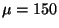 and a
standard deviation of
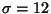. What is the mean and standard deviation of the sampling
distribution of  for samples of size 25.
for samples of size 25.
The mean of the sampling distribution is the same as the original mean. Therefore 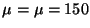. The standard deviation of the sampling distribution or the standard error is the original standard deviation divided by the squareroot of the sample size. Therefore
The idea of an estimator and its sampling distribution is used to give a formal definition of a
confidence interval. Suppose  is an estimator for
is an estimator for  and
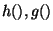 are
functions of
and
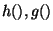 are
functions of  with
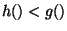 for all values of
with
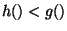 for all values of  . Then
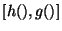 forms
a random interval, that is an interval of numbers which arises randomly. If for some
value
. Then
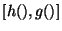 forms
a random interval, that is an interval of numbers which arises randomly. If for some
value  we have that
we have that
Summarizing all this we have that an
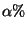-confidence interval for a paramter  is a random interval
, where
is a random interval
, where  is an estimator of
is an estimator of  and
are functions of
and
are functions of  such that
such that
We now look at the particular case where the parameter of interest is the population mean  and the estimator is the sample mean
and the estimator is the sample mean  . The procedures used are separated into small and large
sample procedures because of the following result, called the Central Limit Theorem which
says that for large enough sample size the sampling distribution of from any parent
population ( the population from which the sample is drawn) is approximately normal.
. The procedures used are separated into small and large
sample procedures because of the following result, called the Central Limit Theorem which
says that for large enough sample size the sampling distribution of from any parent
population ( the population from which the sample is drawn) is approximately normal.
Central Limit Theorem If  is sample mean for
is sample mean for  observations from any population
with mean
observations from any population
with mean  and finite standard deviation
and finite standard deviation  , then for"large" sample sizes
, then for"large" sample sizes  , the
sampling distribution of
, the
sampling distribution of  is approximately normal with mean
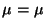 and standard
deviation
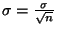.
is approximately normal with mean
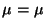 and standard
deviation
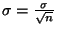.
The "large" in the theorem says that this is a limiting result. That is the theorem is true in the limit as the sample size goes to infinity. In practice generally the normal approximation is used when the sample size is 30 or greater (although if the parent population is very symmetrical itself the approximation works well at lower sample sizes). Therefore the cutoff between samll and large sample procedures is usually set at 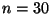.
We now turn to the problem of actually estimating a population mean  . Recall that what we are
looking for is a confidence interval estimate. This means finding a random interval with a
given probability of containing the population mean. In terms of a general formula we are looking
for a random interval which contains the population mean a given proportion of the time. The sample
mean
. Recall that what we are
looking for is a confidence interval estimate. This means finding a random interval with a
given probability of containing the population mean. In terms of a general formula we are looking
for a random interval which contains the population mean a given proportion of the time. The sample
mean  is an estimator for
is an estimator for  and we use the ideas concerning the sampling distribution of
and we use the ideas concerning the sampling distribution of
 together with the central limit theorem to construct large sample confidence intervals for
together with the central limit theorem to construct large sample confidence intervals for
 .
.
We suppose that is a population with mean  and standard deviation
and standard deviation  and that we can
choose a sample size
and that we can
choose a sample size  large enough (at least 30) so that the central limit theorem applies.
The sampling distribution of
large enough (at least 30) so that the central limit theorem applies.
The sampling distribution of  is then approximately normal with
is then approximately normal with
From the normal distribution we have the following inequality on z-values which occurs  % of
the time
% of
the time
The inequality above defines a random interval containing  which must occur
which must occur  % of the
time and thus defines an
% of the
time and thus defines an  -percent confidence interval for
-percent confidence interval for  . Particular values for the
variables will give a confidence interval estimate.
. Particular values for the
variables will give a confidence interval estimate.
The formula given above depends upon the population standard deviation  . The following
question arises. If we don't know
. The following
question arises. If we don't know  why would
why would  be known? In practice this is averted by
using in place of
be known? In practice this is averted by
using in place of  . Usually for large samples, the sample standard deviation, , is
close enough to the population standard deviation
. Usually for large samples, the sample standard deviation, , is
close enough to the population standard deviation  , so that the estimate still has the
required confidence. Using the ANALYSIS OF THE VARIANCE TOOL we can build confidence intervals for
standard deviations.
, so that the estimate still has the
required confidence. Using the ANALYSIS OF THE VARIANCE TOOL we can build confidence intervals for
standard deviations.
Large Sample Confidence Intervals for  If is any population with mean
If is any population with mean  then a large sample
then a large sample  % confidence interval for
% confidence interval for  is given by
is given by
Notice that the confidence interval has the format
The construction of these confidence interval estimates depends upon determining the confidence coefficients so we first show how this is done.
EXAMPLE
Determine the large sample 95% and 99% confidence coefficients.
The desired percentage 95% is centered on the mean so that 47.5% is on either side. Looking in the standard normal table for the entry .4750 we find that it corresponds to z = 1.96. Therefore z = 1.96 is the 95% large sample confidence coefficient. Again in MAGNUSSTAT this is done automatically and presented in the output box.
To find the 99% confidence coefficient we follow the same procedure. Draw a normal curve and place 99% centered on the mean. This gives 49.5% on either side and this is the value we look for in the normal table. We see that the required z-value is between z = 2.57 and z = 2.58. We will take the 99% confidence coefficient as z = 2.58.
Determining confidence interval estimates is then reduced to computing the required information and substituting in the given formula.
EXAMPLE A study was done to determine the mean completion time of a certain operation. A random sample of 64 such operations had a sample mean of 151 minutes with a sample standard deviation of 18 minutes. Determine 95% and 99% confidence interval estimates for the true mean completion time.
Here  so large sample procedures can be used. For 95% the confidence coefficient is z
= 1.96. The computed information is
so large sample procedures can be used. For 95% the confidence coefficient is z
= 1.96. The computed information is
There are two ways in which the results can be reported. First:
A 95% confidence interval for the mean completion time is 146.59 minutes to 155.41 minutes.
The second:
The mean completion time is 151 minutes with a 95% margin of sampling error of minutes.
To convert this into a 99% confidence interval, all that must be changed is the confidence coefficient. The coefficient for 99% was 2.58 so the computations must be redone with z = 2.58 rather than z = 1.96. Therefore here the confidence interval estimate is
Again the two ways in which the results can be reported are:
A 99% confidence interval for the mean completion time is 145.19 minutes to 156.81 minutes.
or
The mean completion time is 151 minutes with a 99% margin of sampling error of minutes.
As expected the 99% interval is wider ( the error is larger) and hence less accurate.
Suppose that in the previous example the error in the 95% estimate of minutes is too large and it is desired to improve the accuracy to an error of minutes. If the 95% confidence level is maintained the only way this could be done is to increase the sample size. The question is how large large a sample is needed.
From before we have that the error is given by
Now we do the same computations in terms of symbols to get a general formula. We have that
Determination of Appropriate Sample Size To get a desired error of in the
determination of the sample mean  for a confidence level of
for a confidence level of  the appropriate sample
size is given by
the appropriate sample
size is given by
What is sometimes done in practice is that a pilot study is conducted to get a value of and this is then used in the above formula.
The techniques that we have examined so far depend upon being able to draw a large enough sample so that the central limit theorem can be used. In many situations though, it is impractical or impossible to draw a large sample. Two very common testing situations where it is difficult, if not impossible, to draw large samples are in destructive testing and more importantly for nurses and other health care professionals, medical testing. Destructive testing refers to statistical testing where the sample is destroyed or made unusable by the test. For example in testing the breaking strength of a steel rod the rod must be broken. Similarly a disposable syringe cannot be reused. Because of the costs involved we are most times restricted to relatively small samples. In medical testing we are also in many cases restricted to smaller samples. Ultimately testing must be done on human subjects and this cannot always be done with enough subjects to apply large sample techniques. Because of this, bias questions often arise in medical testing. Human subjects are frequently obtained by paying people. However the population of people who would subject themselves to some sort of medical test for payment is not the same as the general population. We must be aware of this in evaluating many medical findings.
To handle estimation and other inference procedures concerning means when large samples cannot be
drawn, we must deal with parent populations that are themselves normal or at least not too skewed.
If this is not a viable assumption then very little can be done. Hence we will assume that our
parent population is normal with mean  . The estimation of
. The estimation of  proceeds by using another
continuous distribution which is very similar to a standard normal distribution.
proceeds by using another
continuous distribution which is very similar to a standard normal distribution.
If  is a positive integer a t-distribution with n degrees of freedom is a continuous
distribution whose density curve has the equation
is a positive integer a t-distribution with n degrees of freedom is a continuous
distribution whose density curve has the equation
EXAMPLE A study was done to determine the mean time to toleration of solid food after a stomach surgery. A random sample of 16 patients had a sample mean of 6.2 days with a sample standard deviation of 1.2 days. Determine a 95% confidence interval estimate for the true mean time.
Here so large sample procedures cannot be used. Assuming that the mean time follows a normal distribution we can apply the small sample procedure. First we must find the 95% t confidence coefficient. Since a 95% interval will leave a total of 5% in the tails there is 2.5% in each tail. There are 16 observations so 15 d.f. Therefore the appropriate t-confidence coefficient is
The remaining computed information is
Then:
A 95% confidence interval for the mean time to tolerate solid food is 5.56 days to 6.84 days
In that estimation theory we considered sampling from a population and then estimating parameter values from the computed sample information. We now discuss statistical testing or hypothesis testing. Much of the theoretical framework is the same as in estimation theory but the viewpoint is different. In hypothesis testing we begin with a claim or hypothesis about a population parameter and then test this claim by looking at sample information.
Suppose that standard guidelines say that the average time to complete a certain surgical procedure is 2 hours or 120 minutes. We take the claim of an average of 120 minutes as a hypothesis about the true population mean and we wish to test whether this is correct or not. Suppose further that a random sample of 25 of these surgical procedures had an average (sample average) completion time of 151 minutes. Then the observed evidence is that it actually takes longer than 120 minutes on average. Of course the difference between the theoretical avergae of 120 minutes and the observed value of 151 minutes may be soley due to random variation. If we use the computed sample mean of 151 minutes as evidence that either the claim that the population mean is 120 is correct or that the claim is too low this is an example of a hypothesis testing procedure. Essentially here we are looking at whether the observed value, 151 minutes, is far enough away from the hypothesized mean of 120 minutes to be evidence that 120 is too low. The criteria used to determine in a scientific manner whether it is far enough away will be discussed below.
What is crucial in statistical hypothesis testing is that the general procedure is not to prove
the hypothesis but rather to attempt to disprove the hypothesis. For this reason the
hypotheses that we test in statistics are called null hypotheses because we are trying to
null them or negate them. If we cannot null them or negate them we accept them. Null hypotheses
are denoted by  and generally have the form
and generally have the form
In the example involving the surgical procedure time the parameter being tested is the population
mean  and the claim is that this mean is 120 minutes. Therefore for this test the null
hypothesis is
and the claim is that this mean is 120 minutes. Therefore for this test the null
hypothesis is
EXAMPLE 6
Suppose we consider two different hospitals A and B and we wish to determine if the average per
patient cost for a given procedure is the same in both hospitals. If we let  be the average
per patient cost in hospital A and
be the average
per patient cost in hospital A and  be the average
per patient cost in hospital B then the parameter being testing is
be the average
per patient cost in hospital B then the parameter being testing is
 the difference
of the two means. The appropriate null hypothesis is then
the difference
of the two means. The appropriate null hypothesis is then
To actually test a given null hypothesis we roughly proceed as follows: for an estimator
statistic  for
for  we have a cutoff value
we have a cutoff value  . If
. If  we reject the null hypothesis
while otherwise we accept it. Which estimator statistic to use, how the value of
we reject the null hypothesis
while otherwise we accept it. Which estimator statistic to use, how the value of  is determined
and how to actually carry out the analysis we will now discuss.
is determined
and how to actually carry out the analysis we will now discuss.
In testing a null hypothesis
 the idea is to attempt to disprove it or
reject it. We must therefore have an alternative hypothesis, which we denote by
the idea is to attempt to disprove it or
reject it. We must therefore have an alternative hypothesis, which we denote by  to
accept if we do reject
to
accept if we do reject  . The alternative hypothesis can have one of three possible forms:
. The alternative hypothesis can have one of three possible forms:
EXAMPLE
In the test of surgical time we had the null hypothesis
Once a null hypothesis and alternative hypothesis are chosen we have the following schematic situation (figure 1) which contains all the relevant information about statistical testing.
A type 1 error is the error of rejecting a null hypothesis when it is really true. Here we
randomly get a sample which refutes the null hypothesis even though the null hypothesis is true. The
probability or risk of committing a type 1 error is called the level of significance or
 -error (alpha error).
A type 2 error is the error of accepting a null hypothesis when it is really false. Here we
randomly obtain a sample which backs up the null hypothesis even though the null hypothesis is
false. The probability or risk of committing a type 1 error is called the
-error (alpha error).
A type 2 error is the error of accepting a null hypothesis when it is really false. Here we
randomly obtain a sample which backs up the null hypothesis even though the null hypothesis is
false. The probability or risk of committing a type 1 error is called the
 -error (beta error). It is also called the
operating characteristic value. The probability of not committing a type 2 error {the lower
right hand box} is
-error (beta error). It is also called the
operating characteristic value. The probability of not committing a type 2 error {the lower
right hand box} is  and is called the power of the test. If there are two possible
tests for a hypothesis the more powerful test is the one with the higher power. The values of
and is called the power of the test. If there are two possible
tests for a hypothesis the more powerful test is the one with the higher power. The values of
 and
and  are inversely related for a fixed sample size. That is if there is a small
are inversely related for a fixed sample size. That is if there is a small
 , that is a small chance of making a type 1 error, there may be a larger
, that is a small chance of making a type 1 error, there may be a larger  , or a
larger chance of making a type 2 error. If we wish to maintain a small
, or a
larger chance of making a type 2 error. If we wish to maintain a small  and have a smaller
and have a smaller
 we must take a larger sample size. The relationship between
we must take a larger sample size. The relationship between  and
and  is
analogous to the relationship between confidence and accuracy in an estimation procedure.
is
analogous to the relationship between confidence and accuracy in an estimation procedure.
In setting up a criterion for accepting or rejecting a null hypothesis  we attempt to set the
level of significance at a predetermined small value. In most practical testing this value is
either 1% or 5% although any value can be used. For example if a test is conducted at a 5% level of
significance this means that there is only a 5% chance of rejecting the null hypothesis if it is
really true.
we attempt to set the
level of significance at a predetermined small value. In most practical testing this value is
either 1% or 5% although any value can be used. For example if a test is conducted at a 5% level of
significance this means that there is only a 5% chance of rejecting the null hypothesis if it is
really true.
There is a nice analogy between the hypothesis testing framework and the framework of the criminal justice system in the United States. When a defendant goes into court the presumption is innocent until proven guilty. The burden of proof is all on the prosecution. Hence the defendants innocence is a null hypothesis while the alternative is the defendant's guilt. Therefore we have
Hence in this legal analogy the  -error is convicting an inncoent defendant while the
-error is convicting an inncoent defendant while the
 -error is letting a guilty defendant go free. Historically the American legal system has
been geared to making
-error is letting a guilty defendant go free. Historically the American legal system has
been geared to making  as small as possible. What must be realized is that this follows
the above theoretical model so that
as small as possible. What must be realized is that this follows
the above theoretical model so that  and
and  are inversely related. In practical terms
this means that anything that is done to make it harder to convict an innocent person will
increase the probability of letting a guilty person go free. Conversely anything done to make it
harder for a guilty person to go free will increase the probability of convicting an innocent
person.
are inversely related. In practical terms
this means that anything that is done to make it harder to convict an innocent person will
increase the probability of letting a guilty person go free. Conversely anything done to make it
harder for a guilty person to go free will increase the probability of convicting an innocent
person.
For any statistical hypothesis test there is a five step procedure that is always followed. What will differ in this procedure in going from test to test is the type of test statistic used and the determination of critical regions. We will go over this procedure, do some examples and then in the rest of the chapter go over the particular types of tests most relevant to nursing and medical practice.
The first step in the testing procedure is to formulate the null hypothesis  . As
explained in section 6.1 this will usually have the form
. As
explained in section 6.1 this will usually have the form
 where
where  is a
parameter and
is a
parameter and  is a particular value. Recall that we are not trying to prove this null
hypothesis but rather to disprove it or reject it. If we cannot reject it it will be accepted.
is a particular value. Recall that we are not trying to prove this null
hypothesis but rather to disprove it or reject it. If we cannot reject it it will be accepted.
The second step in the testing procedure is to formulate the alternative hypothesis
 which will be accepted if the null hypothesis is rejected. As explained in the last section
the alternative hypothesis can have one of three possible forms:
which will be accepted if the null hypothesis is rejected. As explained in the last section
the alternative hypothesis can have one of three possible forms:
The third step in the testing procedure is to choose three things: a level of significance, a sample size and an appropriate test statistic.
The level of significance is the probability of making a type 1 error, that is the probability of rejecting the null hypothesis when it is true. It is chosen to be a small number, usually 1% or 5%, although any value can be used. If we reject at 1% value then we are 99% confident that we made the right decision.
The appropriate test statistic is a statistic whose sampling distribution depends upon the parameter being tested. We wish to find the cutoff value so that the probability of the observed value of the test statistic is low (less than the level of significance) if the null hypothesis is false. How we arrive at appropriate test statistics will be discussed in subsequent sections.
The fourth step in the testing procedure is to determine a rejection region or critical region. This region will serve as the cutoff for accepting or rejecting the null hypothesis. If the observed value of the test statistic falls in the rejection region the null hypothesis will be rejectedd. If the observed value of the test statistic doesn't fall in the rejection region then the null hypothesis will be accepted. The determination of the critical region will be based on the level of significance and the sampling distribution of the test statistic and will be determined so that the probability of a value of the test statistic falling the critical region is less than the level of significance. Again we will see how this is done for specific test statistics in subsequent sections.
The fifth step and final step in the testing procedure is to obtain sample results and a value
for the test statistic. If the test results are in the rejection region the results are
said to be statistically significant and the null hypothesis  is rejected in favor of the
alternative
is rejected in favor of the
alternative  . If the test results are not in the rejection region then we say the results are
not statistically significant and the null hypothesis
. If the test results are not in the rejection region then we say the results are
not statistically significant and the null hypothesis  is accepted.
Thus significant results lead to rejection of the null hypothesis while not significant results lead
to acceptance of the null hypothesis.
is accepted.
Thus significant results lead to rejection of the null hypothesis while not significant results lead
to acceptance of the null hypothesis.
Another concept is important relative to this fifth step. The P-value of the test results is
the probability of obtaining a value of the test statistic more unusual that what was obtained,
assuming the null hypothesis is true. If there is a level of significance  , then being in the
rejection region is equivalent to having a P-value less than
, then being in the
rejection region is equivalent to having a P-value less than  . Hence the null hypothesis is
rejected whenever the P-value is less than the given level of significance. Therefore we have the
following two equivalent rejection criteria:
. Hence the null hypothesis is
rejected whenever the P-value is less than the given level of significance. Therefore we have the
following two equivalent rejection criteria:
 (1) The value of the test statistic falls in the rejection region
(1) The value of the test statistic falls in the rejection region
 (2) The P-value of the test results are lower than the level of significance
(2) The P-value of the test results are lower than the level of significance
 .
.
The second criteria is important to note since many computer programs print the P-values. In using
these programs the rejection regions don't have to be determined - just the computed P-values
compared with the given  .
.
.
.
We now summarize the five step procedure and then do several examples.
 STEP ONE: Formulate the null hypothesis:
STEP ONE: Formulate the null hypothesis:
 STEP TWO: Formulate the alternative hypothesis:
STEP TWO: Formulate the alternative hypothesis:
 STEP THREE: Choose a level of significance
STEP THREE: Choose a level of significance  , a sample size
, a sample size
 and an appropriate test statistic.
and an appropriate test statistic.
 STEP FOUR: Based on the sampling distribution of the test statistic and the
chosen level of significance determine a rejection region or critical region. The
values not in the rejection region are called the acceptance region.
STEP FOUR: Based on the sampling distribution of the test statistic and the
chosen level of significance determine a rejection region or critical region. The
values not in the rejection region are called the acceptance region.
 STEP FIVE: Obtain test results and a value for the test statistic.
STEP FIVE: Obtain test results and a value for the test statistic.
 (a) If the test results are in the rejection region the results are
said to be statistically significant and the null hypothesis
(a) If the test results are in the rejection region the results are
said to be statistically significant and the null hypothesis  is rejected in favor of the
alternative
is rejected in favor of the
alternative  . This is equivalent to the P-value of the test results being lower than the level
of significance.
. This is equivalent to the P-value of the test results being lower than the level
of significance.
 (b)If the test results are not in the rejection region then we say the results are
not statistically significant and the null hypothesis
(b)If the test results are not in the rejection region then we say the results are
not statistically significant and the null hypothesis  is accepted. This is equivalent
to the P-value of the results being higher than the level of significance.
is accepted. This is equivalent
to the P-value of the results being higher than the level of significance.
EXAMPLE
It is claimed that the average production time for a certain
produced item is 26 minutes. There is some evidence that it actually takes longer. To test the
claim, 64 items were sampled. A sample average production time of  minutes with a
standard deviation of
minutes with a
standard deviation of  minutes was computed. Is this enough evidence at a 5% level of
significance to reject the claim.
minutes was computed. Is this enough evidence at a 5% level of
significance to reject the claim.
Here the null hypothesis is  matching the claim. We are interested in the fact that it
actually takes longer so the alternative is
matching the claim. We are interested in the fact that it
actually takes longer so the alternative is  . This is a one-sided alternative. Hence we
have
. This is a one-sided alternative. Hence we
have
The sample size is  while the chosen level of significance is
while the chosen level of significance is
 . An
appropriate test statistic for testing hypotheses concerning means (see section 6.5) is
. An
appropriate test statistic for testing hypotheses concerning means (see section 6.5) is
In figure 3 we see a normal distribution with a supposed mean of  . This corresponds
to a z-value of
. This corresponds
to a z-value of  . Given the alternative
. Given the alternative  it is clear that high values of the mean
will lead to rejection. The 5% level tells us how high - only the highest 5% will lead to
rejection. From the standard normal table we find (as in chapter four) that a z-value of
it is clear that high values of the mean
will lead to rejection. The 5% level tells us how high - only the highest 5% will lead to
rejection. From the standard normal table we find (as in chapter four) that a z-value of  cuts off the highest 5%. This is called the critical z-value, which we denote by
cuts off the highest 5%. This is called the critical z-value, which we denote by  . Here
then i
. Here
then i
 . This is the cutoff above which there will be rejection. Notice that since the
alternative is one-sided only one tail of the normal curve leads to rejection. Tests like this are
then called one-tailed tests. If both tails led to rejection it would be called a two-tailed test.
. This is the cutoff above which there will be rejection. Notice that since the
alternative is one-sided only one tail of the normal curve leads to rejection. Tests like this are
then called one-tailed tests. If both tails led to rejection it would be called a two-tailed test.
The sample results are:
The results would be reported in the following manner.
At a 5% level the result were significant. Therefore the null hypothesis that the mean was 26 is
rejected in favor of the alternative that the mean is greater than 26.
From A normal table we see that there is a probability of only .0037 of obtaining a z-value of
over 2.67. Hence the P-value of the above test results is .0037. This is below
 .
Again using the P-value criterion the null hypothesis would be rejected since the P-value is lower
than the chosen level.
.
Again using the P-value criterion the null hypothesis would be rejected since the P-value is lower
than the chosen level.
It should be clear from this example that the testing procedure is rather straightforward once an appropriate test statistic and its sampling distribution is known. Therefore what must be done now is to describe the important testing situations together with the appropriate corresponding test statistics.
In most practical testing situations there are three population parameters that may be of interest: means, standard deviations and proportions. Hypotheses on these parameters can be tested in several different ways.
In a one-sample test, the value of the parameter is tested against some predetermined standard or target value. The sample results in a single sample are used to either accept of reject that standard. Both examples in the previous section were one sample tests.
In a two-sample test, independent samples from two different populations are used to determine comparisons between the parameters of the two populations. For example in comparing whether the completion time of two surgical procedures differs between hospital A and hospital B independent samples would be drawn from each and then compared.
In multiple sample tests parameters from many different populations are tested in one test.
Therefore there are nine basic situations which the statistical analyst must be acquainted with: one sample, two sample and multiple sample for means; one sample, two sample and multiple sample for standard deviations; and one sample, two sample and multiple sample for proportions. Within each of these nine basic situations testing may differ depending on whether large or small samples are drawn. The analyst must be acquainted with this also. The chart in figure 4 gives an overview picture of this parametric testing.
Tests of means are generally called t-tests because they use the t-distribution. Multiple sample tests of means fall into what are called analysis of variance or ANOVA procedures. One sample tests of standard deviations use the chi-square distribution while two sample and multiple sample tests for standard deviations use the F-distribution and are called F-tests. One and two sample tests of proportions are called p-tests and are usually based on the normal distribution. Multiple sample tests use the chi-square distribution and will be discussed in the next chapter. Multiple sample procedures can also be used for two sample testing.
The mean  of a population is the most common parameter tested. We now consider one
sample tests of means. Two sample tests of means are handled under two variable data sets while
multiple sample tests of means will be hndled under mutliple variable data sets.
of a population is the most common parameter tested. We now consider one
sample tests of means. Two sample tests of means are handled under two variable data sets while
multiple sample tests of means will be hndled under mutliple variable data sets.
In a one sample test of means we are testing null hypotheses of the form
If a large sample can be drawn, that is a sample of over 30, then the appropriate test statistic for testing a null hypothesis of the form 1 is
If a large sample is not drawn, that is the sample size is under 30, then the appropriate test statistic for testing a null hypothesis of the form (1) is
EXAMPLE
An insurance company uses as a standard 90 days between paid treatments for a certain chronic condition. An advocacy group felt that this was too long between treatments. 81 patients with this ailment were sampled and monitored by a physician group to determine the time required between treatments. A sample mean of 86 days was computed with a standard deviation of 10.3 days. Is this evidence at a 5% level that the insurance company's target is too high?
Here the null hypothesis is the insurance company standard while the alternative is that the true mean is actually less than this.
The rejection region based on the normal distribution is pictured in figure 5
The critical z-value is
 . The value is negative because this is a one-tailed test with
the rejection region being below the mean.
. The value is negative because this is a one-tailed test with
the rejection region being below the mean.
The sample results are:
The results would be reported in the following manner.
At a 5% level the result were significant. Therefore the null hypothesis that the mean was 90 is
rejected in favor of the alternative that the mean is less than 90.
From this we can conclude that the evidence is that the insurance companies accepted time is too long.
From the normal table we see that there is a probability of under .001 of obtaining a z-value of
over -3.50. Hence the P-value of the above test results is less than .001. This is below
 . Again using the P-value criterion the null hypothesis would be rejected since the P-value is
lower than the chosen level.
. Again using the P-value criterion the null hypothesis would be rejected since the P-value is
lower than the chosen level.
EXAMPLE
An cereal company wants to advertise that its cereal has 2 grams of fat per serving. The FTC is going to test this to determine whether to allow the advertising. 9 servings of this cereal were sampled and analyzed for fat content. A sample mean of 2.3 grams was computed with a standard deviation of 1.2 grams. Is this evidence at a 5% level that the fat content on average is higher than the company's claim? Should they be allowed to advertise the 2 gram figure.
Here the null hypothesis is the company claim while the alternative is that the true mean is actually more than this.
The rejection region based on the t-distribution is pictured in figure 6
The critical t-value is .
The sample results are:
The results would be reported in the following manner.
At a 5% level the result were not significant. Therefore the null hypothesis that the mean was 2 is
accepted.
From this we can conclude that the evidence is such that the company should be able to advertise its claim.
Note that in conducting these tests using MAGNUSSTAT the P-values will be computed automatically
and the appropriate decision ( accept or reject) based on the user defined level of significance
will be presented in the output box.